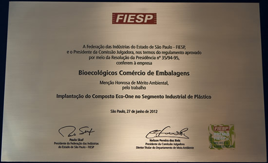

|
Prêmio FIESP |

|
É com grande satisfação que divulgamos “Menção Honrosa” recebida no 18 Prêmio
FIESP de Mérito Ambiental 2012 pelo projeto “Implantação do Composto Eco-One no
Segmento industrial de Plásticos”.
O evento esta em sua 18º edição que tem como objetivo avaliar projetos que visam
diminuir impactos ambientais no cenário industrial formado por uma comissão
julgadora de peso, entre elas USP, UNESP, OAB, IPT, BNDES, SENAI e Polícia
Ambiental. Caso queiram conhecer os cases que se destacaram no evento visite o
link abaixo.
http://www.fiesp.com.br/noticias/conheca-os-cases-das-empresas-vencedoras-do-18o-premio-fiesp-de-merito-ambiental/
|
| |
|